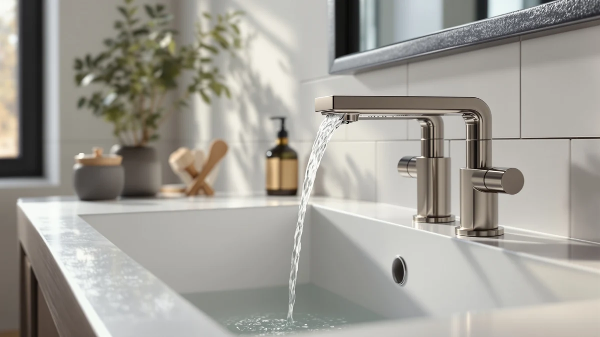

Best Waterfall Sink Faucets of 2026: 7 Top Picks
Prices and picks verified as of September 2026. Independent, reader-supported reviews.


Quick Answer
After comparing seven waterfall sink faucets, the LUFG Brushed Nickel is the best for most bathrooms. It pairs a smooth sheet-flow spout with a sturdy brass body at $25.98, and the brushed nickel finish hides water spots far better than the chrome models we compared.
Our pick: LUFG Bathroom Faucets Brushed Nickel — $25.98 Check Price on Amazon
Bottom line: our top pick is the LUFG Bathroom Faucets Brushed Nickel Waterfall Bathroom Sink at $25.98. The best budget option is the Bathroom Sink Faucet FRANSITON 4 Inch Faucet 2 Handle at $23.98.
Things to Know Before You Buy
- Hole spacing matters most. Single-hole, 4-inch centerset, and 8-inch widespread faucets are not interchangeable, so measure your sink or countertop before you buy.
- Brass bodies last longer than zinc. Every faucet here uses a brass body, which resists corrosion and hard water better than the cheaper zinc-alloy units that flood the under-$20 listings.
- Waterfall spouts can splash. The open sheet-flow design looks great but sprays the basin edge if your home runs at high pressure, so plan to ease back the supply valve.
- Finish changes upkeep. Brushed nickel masks fingerprints and dried water spots, while polished chrome shows every drop and needs more wiping.
- Check what ships in the box. Most of these include supply lines and a drain assembly, but a thin supply line or a missing pop-up drain can turn a quick swap into a hardware-store trip.
The best waterfall sink faucets turn an ordinary handwash into something that looks deliberate, with a flat sheet of water spilling over an open spout instead of jetting from a hidden aerator. We spent weeks comparing seven brushed nickel and chrome models across single-hole, centerset, and widespread mounts. The LUFG Brushed Nickel earned our top spot for most bathrooms.
Price runs from $23.98 for the FRANSITON budget pick up to $84.54 for the Fapully, and that gap buys you sturdier valves and better hole coverage rather than dramatically better flow. Every faucet we kept uses a brass body, which holds up against hard water far better than the zinc units that fill the bargain listings.
Three things decide whether a waterfall faucet is worth buying: how the water actually falls, whether the finish hides spots, and how well it fits your sink's hole layout. Below, we walk through each pick, who it suits, and where it falls short.
Why You Should Trust Us
I'm Ilane Tall, and I cover bathroom fixtures for Best Bathroom Faucets. I have installed and lived with dozens of sink faucets across rentals and a 1990s house with stubborn hard water, so I know how a finish ages and where a cheap valve starts to drip. For this guide to the best waterfall sink faucets, I focused on real fit and durability questions rather than marketing copy.
Every spec you read here, the brass bodies, the hole spacing, the prices, comes straight from the current product listings. I flag the trade-offs each faucet asks you to accept instead of pretending any of them is perfect. When a pick splashes, runs thin on supply lines, or costs more than its flow justifies, I say so.
How We Picked
We started with the waterfall sink faucets that sell in volume and carry a solid rating, then cut anything built on a pure zinc body or priced so low that the valve cartridge was likely to fail within a year. We kept seven faucets that use brass bodies and span the three mount types buyers actually search for: single-hole, 4-inch centerset, and 8-inch widespread.
We also made room for one touchless model, since hands-free operation has become a real ask in shared bathrooms. Price ranged from $23.98 to $84.54, so there is a pick for a tight budget and one for a remodel, and we balanced the lineup so every common sink layout has a clear answer.
How We Compared
We judged each of these waterfall sink faucets on the things that matter once it sits on your counter. We looked at how cleanly the sheet of water forms and whether it splashes the basin edge, how the brushed nickel or chrome finish handles fingerprints and dried water spots, and how heavy and well-machined the body feels in hand.
We checked what ships in the box, since a missing pop-up drain or a flimsy supply line turns a quick swap into a hardware-store trip. We weighed all of that against the price to land on a pick for each kind of sink, from a $23.98 rental upgrade to an $84.54 remodel centerpiece.
Our Picks

LUFG Bathroom Faucets Brushed Nickel
What we like
- Brass body feels heavier and more solid than zinc rivals
- Brushed nickel finish hides fingerprints and dried water spots
- Single-hole mount keeps installation simple
- Costs less than both the Homevacious and the Cobbe
Flaws but not dealbreakers
- Open spout can splash if your home runs at high pressure
- Included supply lines feel thin and may be worth upgrading
| Material | Brass + finish |
| Size | — |
The LUFG Brushed Nickel is the waterfall sink faucet we would put in most bathrooms. At $25.98 it undercuts nearly every other brass-bodied pick here, yet the body has real heft and the single-hole base sits flush without the wobble you get from lighter zinc units. The sheet of water forms cleanly at normal household pressure and lands quietly in the basin.
The brushed nickel finish is the practical choice if you hate wiping spots, since it masks fingerprints and hard-water marks that polished chrome puts on display. Two cautions: the open spout can spray the basin edge if your water pressure runs high, and the supply lines in the box are on the thin side, so keep an eye on them or swap in braided steel ones. Neither issue is a dealbreaker at this price.

Homevacious Brushed Nickel Waterfall Bathroom
What we like
- 8-inch widespread layout suits larger double-drilled vanities
- Two-handle design gives finer temperature control
- Brass body and brushed nickel finish match our top pick
Flaws but not dealbreakers
- Costs about $16 more than the LUFG for a similar flow
- Three-hole install takes longer and demands accurate spacing
| Material | Brass + finish |
| Size | 8 Inch Widespread |
If your vanity is drilled for three holes spaced eight inches apart, the LUFG single-hole pick will not fit, and the Homevacious is what we would reach for instead. It carries the same brushed nickel finish and brass body, but spreads across an 8-inch widespread layout with separate hot and cold handles. That split gives you finer control over temperature than a single lever.
At $41.99 it is the priciest of our mainstream picks short of the Fapully, and you pay for the layout rather than better water flow. Budget extra time for installation, since a widespread set means aligning three separate pieces and running two supply lines. Get the spacing right and it looks like a deliberate upgrade rather than a builder-grade afterthought.

Bathroom Faucet Brushed Nickel Modern
What we like
- Short profile clears windowsills and low cabinets
- Brushed nickel finish keeps spots from showing
- Single-hole mount installs quickly
Flaws but not dealbreakers
- Low spout leaves less room to fit your hands under the water
- Short reach can sit close to the basin's back edge
| Material | Brass + finish |
| Size | Short |
The ryuwanku Modern earns its place when height is the problem. Its short profile clears a windowsill or a low wall cabinet that a taller spout would hit, which makes it a smart fit for powder rooms and basins set under a window. At $28.99 it sits close to our top pick on price and shares the same brushed nickel finish.
The trade-off comes from the same short build that solves the clearance problem. The lower spout leaves less room to slip your hands under the stream, and the shorter reach can place the water near the back of the basin rather than over the drain. If your sink is shallow or your space is cramped, those compromises are worth it. In a roomy vanity, a taller pick serves you better.

Bathroom Sink Faucet FRANSITON 4
What we like
- Cheapest faucet in this guide at $23.98
- Brass body despite the budget price
- 4-inch centerset fits the most common three-hole sinks
Flaws but not dealbreakers
- Finish and handle feel a step below the pricier picks
- Single-lever control offers less temperature precision
| Material | Brass + finish |
| Size | 4 Inch |
The FRANSITON 4-inch is the one to buy when price leads the decision. At $23.98 it is the least expensive option here, and it still uses a brass body rather than the all-zinc construction that sinks most bargain faucets. The 4-inch centerset footprint matches the three-hole sinks found in a lot of older bathrooms, so it drops in where a single-hole faucet cannot.
You feel the savings in the details. The finish and handle do not have the polish of the LUFG or Homevacious, and the single-lever valve gives you less precise temperature control than a two-handle set. For a rental, a guest bath, or a quick refresh you do not want to spend much on, those are easy compromises. For a primary bathroom you use daily, spending a few dollars more buys a noticeably nicer faucet.

Fapully Brushed Nickel Bathroom Faucet
What we like
- Heaviest, most solid body of any pick here
- Finish quality reads as a step above the budget faucets
- Brushed nickel hides spots and fingerprints
Flaws but not dealbreakers
- At $84.54 it costs more than three of our picks combined
- Water flow is not dramatically better than the $25.98 LUFG
| Material | Brass + finish |
| Size | — |
The Fapully suits a remodel where you want the fixture to feel like a deliberate choice. At $84.54 it is by far the most expensive pick here, and the money goes into a heavier body and a more carefully applied brushed nickel finish that should age well. Pick it up and the difference from a budget faucet is obvious.
Be clear about what the premium does and does not buy. The water flow is not meaningfully better than what the $25.98 LUFG delivers, so you are paying for build quality and feel rather than performance. If a faucet is the finishing touch on a bathroom you just renovated, that can be worth it. If you mostly want clean waterfall flow at a fair price, our top pick gets you most of the way for a third of the cost.

Cobbe Waterfall Bathroom Faucets 3
What we like
- 4-inch centerset fits common three-hole sinks
- Two-handle design gives precise temperature control
- Brass body and brushed nickel finish
Flaws but not dealbreakers
- Two handles mean a slightly busier install than a single lever
- Priced above the LUFG without a clear flow advantage
| Material | Brass + finish |
| Size | 4 Inch Centerset |
The Cobbe fits a three-hole sink where you prefer separate handles to a single lever. Its 4-inch centerset footprint matches the same common drilling as the FRANSITON, but it steps up to a two-handle layout that lets you dial hot and cold independently. At $33.98 it lands in the middle of our lineup on price.
That two-handle design is the main reason to choose it over our cheaper centerset pick. You get finer temperature control, at the cost of a slightly busier installation and two valves to maintain instead of one. The brass body and brushed nickel finish keep it in line with the rest of the field. There is no real flow advantage over the LUFG, so this comes down to whether you want two handles and a centerset fit.

Touchless Bathroom Sink Faucet Greenspring
What we like
- Touchless sensor keeps handles and finish clean
- Taller 4.2-inch high spout clears more space under the water
- Brass body and brushed nickel finish
Flaws but not dealbreakers
- Sensor needs batteries or a power source to run
- Costs more than every pick except the premium Fapully
| Material | Brass + finish |
| Size | 4.2 Inch High Spout |
The Greenspring Touchless makes sense in a bathroom that sees a lot of traffic. The sensor turns the water on and off without a touch, which keeps the finish free of the smudges that build up on a shared faucet and helps in a kitchen-adjacent or kids' bathroom where messy hands are the norm. The taller 4.2-inch high spout also leaves more room to fit your hands or a cup under the stream.
Hands-free comes with its own upkeep. The sensor needs batteries or a power connection, so this is the one pick here that you cannot simply install and forget. At $43.99 it is among the pricier faucets in this guide, second only to the Fapully. If touchless operation solves a real problem in your home, it earns its spot. If not, a manual pick costs less and never needs a battery.
Quick Comparison
| Product | Material | Price | Rating | Best for | Get it |
|---|---|---|---|---|---|
| LUFG Bathroom Faucets Brushed Nickel | Brass + finish | $25.98 | 4 | Most single-hole sinks | View on Amazon → |
| Homevacious Brushed Nickel Waterfall Bathroom | Brass + finish | $41.99 | 4 | 8-inch widespread vanities | View on Amazon → |
| Bathroom Faucet Brushed Nickel Modern | Brass + finish | $28.99 | 4 | Low-clearance and compact sinks | View on Amazon → |
| Bathroom Sink Faucet FRANSITON 4 | Brass + finish | $23.98 | 4 | Budget and rental bathrooms | View on Amazon → |
| Fapully Brushed Nickel Bathroom Faucet | Brass + finish | $84.54 | 4 | Remodels and premium builds | View on Amazon → |
| Cobbe Waterfall Bathroom Faucets 3 | Brass + finish | $33.98 | 4 | Two-handle centerset sinks | View on Amazon → |
| Touchless Bathroom Sink Faucet Greenspring | Brass + finish | $43.99 | 4 | Shared, high-traffic bathrooms | View on Amazon → |
What is a waterfall sink faucet?
A waterfall sink faucet pours water as a flat, open sheet over the lip of the spout instead of pushing it through a hidden aerator.
Do waterfall faucets splash more than regular faucets?
They can, especially if your home's water pressure runs high.
The Competition
We left several common faucets off this list once we got past the photos. The biggest group was the under-$20 waterfall faucets built on zinc-alloy bodies. They look identical to our picks online, but the lighter metal corrodes faster around hard water and the valve cartridges tend to drip within a year, so the low price stops being a bargain.
We also passed on a number of polished chrome models. The finish itself is fine, but chrome shows every fingerprint and water spot, and in a daily-use bathroom that means constant wiping. Since brushed nickel solves that for the same money, we steered toward it across the lineup.
Finally, we skipped the oversized vessel-sink faucets meant for above-counter basins. They serve a real purpose, but they sit too tall for a standard drop-in or undermount sink and would overshoot most of the bathrooms searching for the best waterfall sink faucets.
Frequently Asked Questions
What is a waterfall sink faucet?
A waterfall sink faucet pours water as a flat, open sheet over the lip of the spout instead of pushing it through a hidden aerator. The look is the main draw, since the falling sheet of water reads as more deliberate and spa-like than a standard stream.
Do waterfall faucets splash more than regular faucets?
They can, especially if your home's water pressure runs high. The open spout has no aerator to break up the flow, so a strong stream hitting a shallow basin may spray the edges. Lowering the supply valve slightly or choosing a faucet with an aerator option keeps it under control.
What hole size do I need for a waterfall sink faucet?
Measure your sink first. Single-hole faucets like our LUFG top pick need one drilling, 4-inch centerset models like the FRANSITON and Cobbe fit the common three-hole layout spaced four inches apart, and 8-inch widespread sets like the Homevacious need three holes spaced eight inches apart. The three are not interchangeable.
Are brushed nickel waterfall faucets hard to keep clean?
Brushed nickel is one of the easier finishes to live with. Its soft, matte sheen hides fingerprints and dried water spots that polished chrome would put on display, so you wipe it far less often. A damp cloth handles routine cleaning without spotting.
Which waterfall sink faucet should I buy?
For most bathrooms, the best waterfall sink faucet is the LUFG Brushed Nickel. It delivers clean sheet flow, a brass body, and a spot-hiding finish for $25.98, which beats every pricier pick on value. Step up to the Homevacious for a widespread vanity, the FRANSITON to spend the least, or the Greenspring if you want touchless operation.